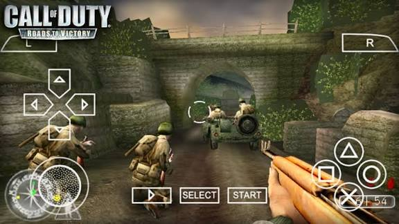
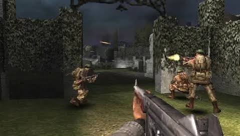
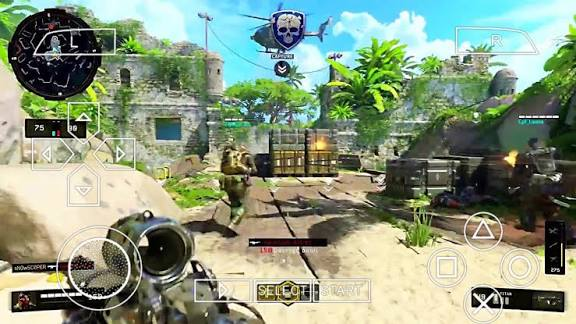

Best PSP Games for PPSSPP Emulator
Best PSP Games for PPSSPP Emulator

Call of Duty: Roads to Victory PPSSPP – PSP (Download for Android) is a first-person shooter developed specifically for the PSP, bringing a complete and immersive Call of Duty experience to the PPSSPP emulator on Android. Built from the ground up for the handheld, the game offers adapted controls and intense action set during World War II.

In this title, players participate in 14 intense battles, directly confronting the might of the German war machine across different fronts of the conflict. The missions are action-packed, requiring strategy, quick reflexes, and sharp aim to survive in realistic and challenging war scenarios.

One of the major highlights of Roads to Victory is its highly precise control system, featuring four different control schemes. This allows every player to choose the configuration that best suits their playstyle on the PSP or PPSSPP. The game also enables quick stance changes—from standing to crouching or prone—along with grenade tossing and precise iron-sight aiming.

Beyond the campaign mode, the game offers a multiplayer mode supporting 2 to 6 players, delivering fast-paced, adrenaline-fueled matches. Available modes include Deathmatch, Capture the Flag, and King of the Hill, perfect for fans of competitive action and quick skirmishes.
Check out the best ppsspp cheats codes
Running smoothly on PPSSPP – PSP for Android, Call of Duty: Roads to Victory is an excellent choice for shooter fans and anyone seeking an intense WWII experience with solid gameplay, a variety of modes, and thrilling combat.
CHECK OUT THE BEST PPSSPP GAMES OF ALL TIMES